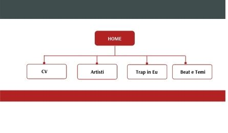
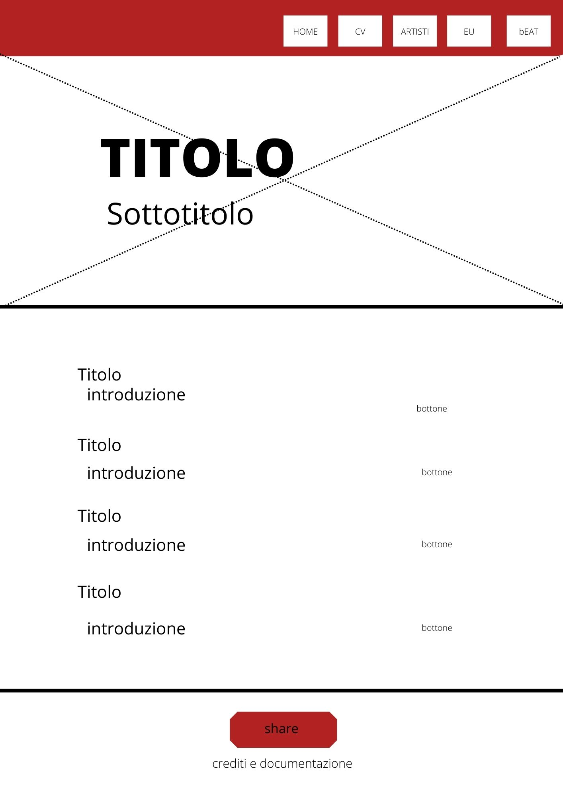
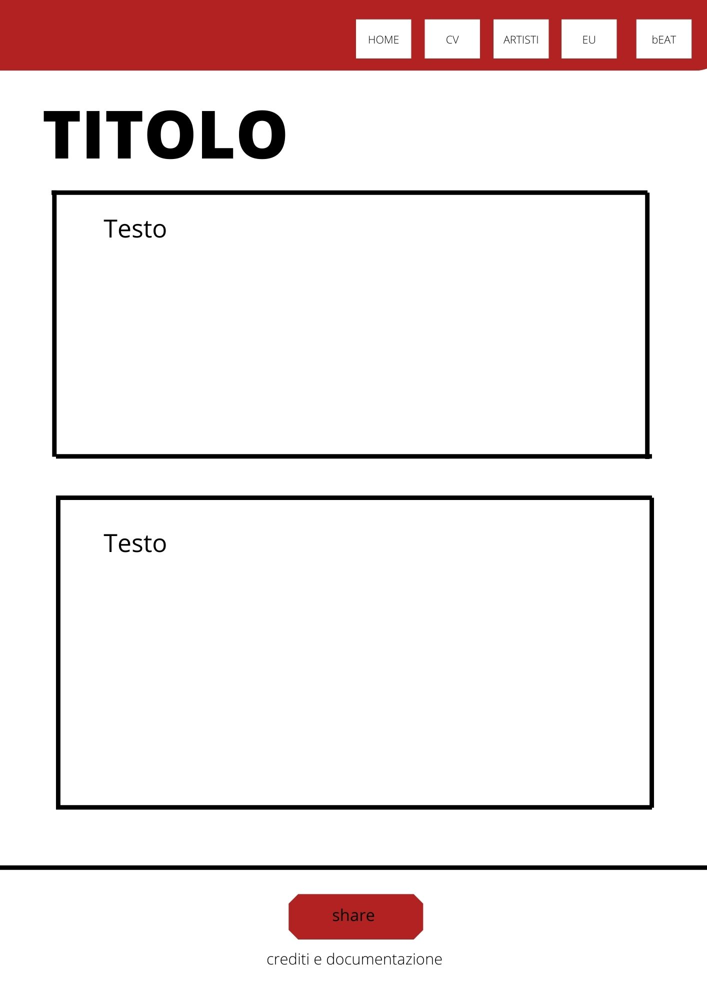

Abbiamo creato questo sito semi-satirico sulla musica trap, con l’obiettivo di informare ma al contempo intrattenere i lettori. Abbiamo scelto di rivolgerci prevalentemente ad un target di utenti tra i quindici e i trent’anni, ma prevediamo che ci siano anche alcuni utenti over 30, non familiari con il genere. Il sito offre una breve panoramica sulla storia e le caratteristiche della trap, e lo fa utilizzando un linguaggio ironico. Consideriamo che il valore aggiunto del sito realizzato risieda nella sua componente satirica, unita ad una trattazione storica del genere, che vadano di pari passo.
Architettura del sito
Wireframe
Linguaggi web utilizzati: HTML, CSS
Strumenti tecnologici utilizzati: SublimeText2 come text editor; Googlefont per i font; spiegazioni in w3school per creazione barra di navigazione, effetto parallax, flex property, bottoni, icone social tutorial DarkCode-Youtube per transizione bottone share; Canva per realizzazione struttura ad albero e wireframe; Github per la pubblicazione; Google Analytics per il controllo delle visualizzazioni